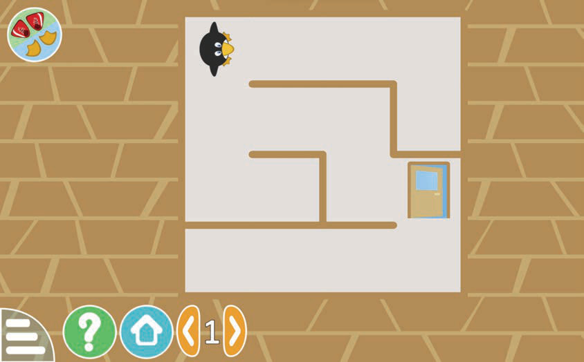

Muda:Dakika 20
Mahitaji:Kompyuta ya mezani, kompyuta mpakato, tableti au simumaizi iliyosakinishwa programu ya mchezo
Mwongozo
1.
Tumia vitufe vya mishale au telezesha kidole kwenye skrini ili kumsogeza Tux.
2.
Lengo ni kumwongoza Tux aweze kufika kwenye mlango wa kutokea.Chunguza Kielelezo namba 2.
Tux

Kielelezo namba 2 kinaonesha mchezo wa mtaa wa njia unaomuonyesha Tux akiwa mwanzo wa njia ndani ya ramani, akielekezwa kufika kwenye mlango wa kutokea ulio upande wa kulia.Kielelezo namba 2: Mchezo wa mtandao wa njia
Kumbuka:Unaweza kuendelea kucheza mchezo katika hatua mbalimbali zenye mtandao wa njia tofauti.